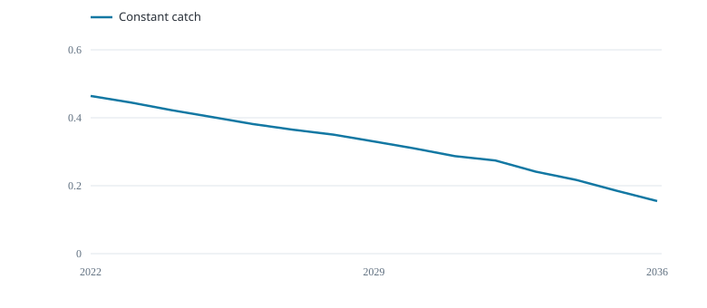

Keep catch at its recent mean.
Biomass across trials

Median end-of-year B / K
Realised catch across trials

Median annual catch (tonnes)
These medians combine the declared stock cases and growth scenarios with equal weight; they are conditional examples.
| Management rule | Mean catch (t/year) | Final B / K | Trials below 0.2 (%) | Catch change (%) |
|---|---|---|---|---|
| Constant catch | 6.987e+04 | 0.1548 | 57.5 | 1.769 |
Final biomass is the median across trials. The threshold column counts trials that fell below 0.2 of carrying capacity at any time; 0.2 is an illustrative comparison level. Catch change is annual absolute change relative to mean catch, including the first change from recent catch. Cases and scenarios have equal weight, not estimated probabilities.
Each year: observe the index, set catch, then update the stock.